MAXimal
добавлено: 11 Jun 2008 10:25
редактировано: 27 Sep 2010 22:57
Содержание [скрыть]
Теорема Пика. Нахождение площади решётчатого многоугольника
Многоугольник без самопересечений называется решётчатым, если все его вершины находятся в точках с целочисленными координатами (в декартовой системе координат).
Теорема Пика
Формула
Пусть дан некоторый решётчатый многоугольник, с ненулевой площадью.
Обозначим его площадь через  ; количество точек с целочисленными координатами, лежащих строго внутри многоугольника — через 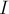; количество точек с целочисленными координатами, лежащих на сторонах многоугольника — через
; количество точек с целочисленными координатами, лежащих строго внутри многоугольника — через 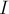; количество точек с целочисленными координатами, лежащих на сторонах многоугольника — через  .
.
Тогда справедливо соотношение, называемое формулой Пика:
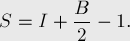
В частности, если известны значения I и B для некоторого многоугольника, то его площадь можно посчитать за  , даже не зная координат его вершин.
, даже не зная координат его вершин.
Это соотношение открыл и доказал австрийский математик Георг Александр Пик (Georg Alexander Pick) в 1899 г.
Доказательство
Доказательство производится в несколько этапов: от самых простых фигур до произвольных многоугольников:
- Единичный квадрат. В самом деле, для него 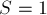, 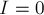, 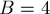, и формула верна.
- Произвольный невырожденный прямоугольник со сторонами, параллельными осям координат. Для доказательства формулы обозначим через
 и
и  длины сторон прямоугольника. Тогда находим: 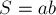, 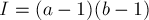, 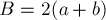. Непосредственной подстановкой убеждаемся, что формула Пика верна.
длины сторон прямоугольника. Тогда находим: 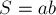, 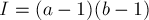, 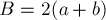. Непосредственной подстановкой убеждаемся, что формула Пика верна. - Прямоугольный треугольник с катетами, параллельными осям координат. Для доказательства заметим, что любой такой треугольник можно получить отсечением некоторого прямоугольника его диагональю. Обозначив через
 число целочисленных точек, лежащих на диагонали, можно показать, что формула Пика выполняется для такого треугольника, независимо от значения .
число целочисленных точек, лежащих на диагонали, можно показать, что формула Пика выполняется для такого треугольника, независимо от значения . - Произвольный треугольник. Заметим, что любой такой треугольник может быть превращён в прямоугольник приклеиванием к его сторонам прямоугольных треугольников с катетами, параллельными осям координат (при этом понадобится не более 3 таких треугольников). Отсюда можно получить корректность формулы Пика для любого треугольника.
- Произвольный многоугольник. Для доказательства триангулируем его, т.е. разобьём на треугольники с вершинами в целочисленных точках. Для одного треугольника формулу Пика мы уже доказали. Дальше, можно доказать, что при добавлении к произвольному многоугольнику любого треугольника формула Пика сохраняет свою корректность. Отсюда по индукции следует, что она верна для любого многоугольника.
Обобщение на высшие размерности
К сожалению, эта столь простая и красивая формула Пика плохо обобщается на высшие размерности.
Наглядно показал это Рив (Reeve), предложив в 1957 г. рассмотреть тетраэдр (называемый теперь тетраэдром Рива) со следующими вершинами:
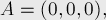
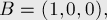
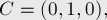
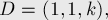
где  — любое натуральное число. Тогда этот тетраэдр 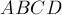 при любых не содержит внутри ни одной точки с целочисленными координатами, а на его границе — лежат только четыре точки
— любое натуральное число. Тогда этот тетраэдр 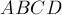 при любых не содержит внутри ни одной точки с целочисленными координатами, а на его границе — лежат только четыре точки  , ,
, ,  ,
,  и никакие другие. Таким образом, объём и площадь поверхности этого тетраэдра могут быть разными, в то время как число точек внутри и на границе — неизменны; следовательно, формула Пика не допускает обобщений даже на трёхмерный случай.
и никакие другие. Таким образом, объём и площадь поверхности этого тетраэдра могут быть разными, в то время как число точек внутри и на границе — неизменны; следовательно, формула Пика не допускает обобщений даже на трёхмерный случай.
Тем не менее, некоторое подобное обобщение на пространства большей размерности всё же имеется, — это многочлены Эрхарта (Ehrhart Polynomial), но они весьма сложны, и зависят не только от числа точек внутри и на границе фигуры.